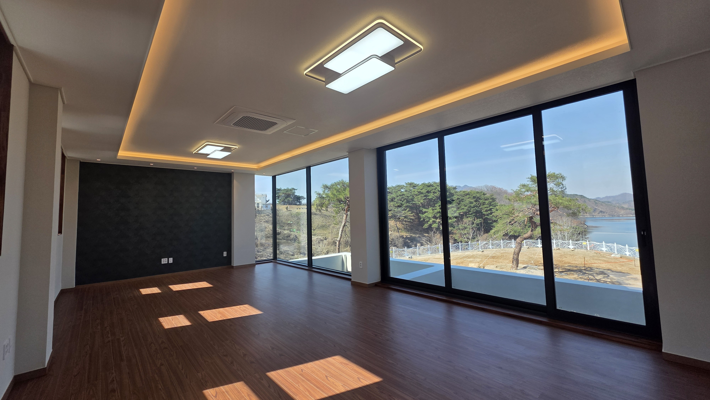

HOUSE INTERIOR IGONGAN
가족의 생활을 담아내는
대전 주택 인테리어
대전 주택 인테리어 전문 이공간. 단독주택과 생활 공간의 구조, 채광, 수납을 고려한 맞춤형 인테리어를 상담합니다.
HOUSE INTERIOR / 대전주택인테리어
대전 주택 인테리어
공간의 가능성을 살피다.
주택의 구조와 가족의 생활 방식은 집마다 다릅니다. 대전 주택 인테리어는 공간의 연결과 채광, 수납을 함께 고민해 오래 머물고 싶은 집을 만드는 데서 시작합니다.
현장과 필요한 범위를 확인한 뒤 공간의 목적에 맞는 방향을 함께 이야기합니다. 대전 인테리어 전문업체 이공간에 편하게 문의해 주세요.
전화 상담 안내 ↗빛과 소재의 균형을 고려한 마감
—거주 환경을 반영한 수납 설계
—
SPACE, MADE FOR LIFE대전 주택 인테리어
공간의 첫 이야기를 나눠보세요.
042-525-5894 ↗